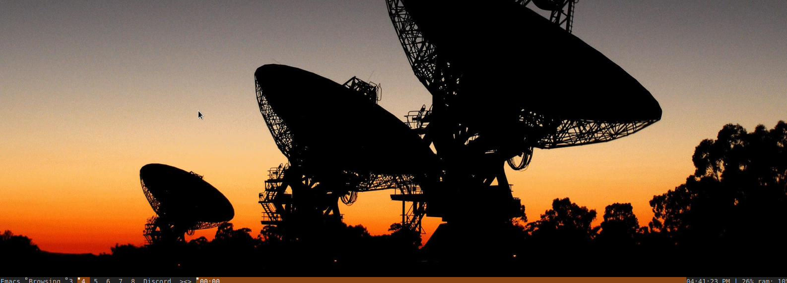

Browsing Youtube with Dmenu
Dmenu + youtube-viewer
Dmenu is a fairly simple utility to use and understand. In essence it is a command-line utility that takes in a number of piped arguments and displays a simple menu of those arguments, with the selected argument being outputted back to stdout. It's a straight-forward concept but depending on how you use it you can make some very nifty tools.
Pre-requisites:
- A cloned or downloaded sourcecode of dmenu
- Gnu C compiler to compile dwm
- Expect ( tcl library ) | consult your linux distribution
- Youtube-viewer | consult your linux distribution
Expecting the unexpected
Expect is a useful tool for setting up responses to scripts. In this case that script is youtube-viewer, which will effectively work as our backend for the dmenu frontend.
Even though expect is typically used when you are certain about what you want, it still allows the use of wildcards, which works perfectly with how youtube-viewer keeps the same format for the prompts but displays seperate result sets.
YT.tcl
#!/usr/bin/expect --
set search [exec fetch 1]
puts $search
eval spawn youtube-viewer --player=mpv $search
expect -re "=>>.*"
set out $expect_out(buffer)
set choice [exec fetch $out $out]
send -- "$choice \n"
wait
This tcl script will communicate ( twice actually ) with a seperate shell script I wrote for displaying youtube-viewer's contents using dmenu
fetch
#!/usr/bin/sh
font=$(echo "Monospace-10:normal")
if [ $# -eq 1 ];
then
echo "-----------------------------------------" | dmenu -l 20 -b -fn $font
else
res=$(echo "$1" | awk '{$1=$2=""; print NR-1, $0}' | dmenu -l 20 -b -fn $font -p "Results")
choice=$(echo $res | awk '{print $1}')
echo $choice
fi
Watching Youtube with the help of Dmenu!

NOTE: This gif is significantly slower than the realtime speed of the screencapture
BONUS : File Exploration with Dmenu!
As a bit of a final comment on interesting uses for dmenu, I wrote up a quick example of a recursive dmenu script that will let you traverse a filesystem until you reach a file that can be opened with xdg open. If it's a folder the function recurses, otherwise it echoes the selected item and opens it.
#!/usr/bin/sh
scan()
{
if [[ -d $1 ]]
then
chosen=$(ls $1 | dmenu -l 20 -i)
scan "$1/$chosen"
else
echo "$1"
fi
}
name=$(scan [[[A DIRECTORY HERE]]])
xdg-open $name
One application I've used this for is a study function that in the triple brackets is replaced with /home/hayden/Documents/books. I have that directory further divided between the kinds of books by directory, so the dmenu script will continue to display results in folders untill a .pdf or a .epub file is selected
I hope these applications of dmenu have given you an idea of what can be accomplished with this simple tool.